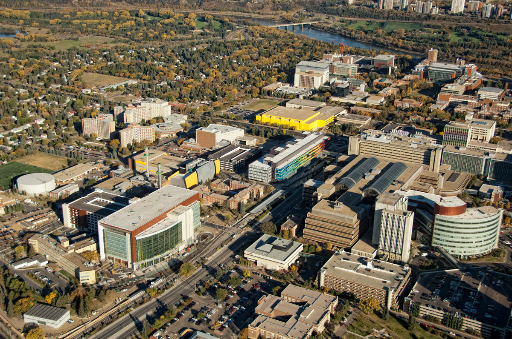

Education
McGill University (2023 - Present)
Master of Information Studies
Major in Data Science, Minor in Business Analytics (Cumulative GPA: 3.83)
Key Courses: Database Design, Data Mining, Information System Design, Web system Design

University of Alberta (2019 - 2023)
Bachelor of Commerce
Major in Finance, Minor in Economics (Major GPA: 3.8, Cumulative GPA: 3.5)
Key Courses: Advanced Macroeconomics (A); Advanced Microeconomics (A-); International Economics (A); International Business (A-); Money and Banking (A-); Marketing (A-); Intro to Finance (A-); Financial Risk Management (A); Accounting Management (A+); Corporate Finance (A-); Operation Management (A-); Information Systems Management (A); Intro to Python Programming (A+)
Awards: Faculty Gold Standard Scholarship (2019) International Student Scholarship (2019-2022) The Naqvi-Rota Award in Business (2022)
